AL0017 · Bayes’ Power for Explaining In-Context Learning Generalizations
Samuel Müller、Noah Hollmann、Frank Hutter · arXiv:2410.01565v1 · 2024-10-02
用可精确计算的合成任务，区分后验本身的局限与神经网络近似误差。
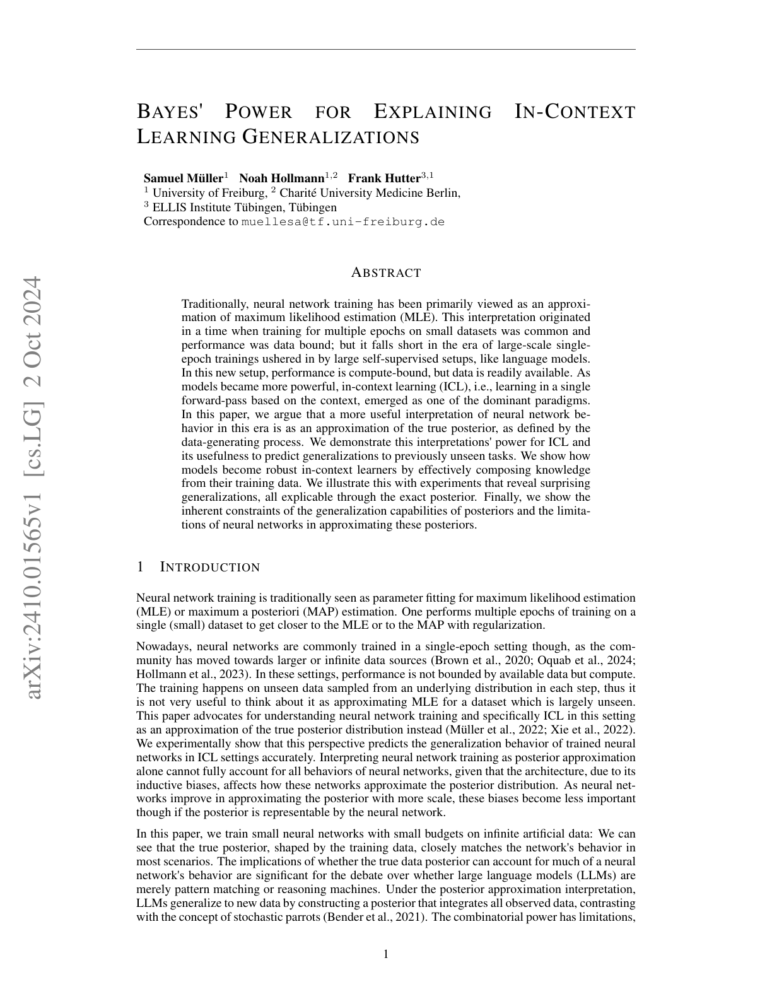
主讲 01–13：动机 1 页，方案与原理 3 页，技术 3 页，结果与对照 3 页，研究支持 1 页。
补充教学：概率计算、输入支持、源文歧义、DMD 拉曼实验设计。随后逐图、逐子图放大图 1–12，最后保留 PDF 全 12 页。
操作：左右方向键翻页，目录按钮跳转，点击任何截图放大。截图保留英文原文；中文说明与教学算例另列。
新增原文分段放大为第91–150页，原PDF索引顺延至151–162页。截图逐段放大，跨页句子接续保留；中文释义和研究建议属于课件新增内容。
单轮训练不断抽取新任务，更适合讨论生成分布上的期望损失。小数据上反复拟合同一数据集的直觉不能完整解释这种训练。
作者用小型网络与无限合成数据比较真实后验和网络预测。训练只见阶跃，也可能输出平滑均值。
研究目标是解释和定位失败原因。论文没有真实细菌数据，也没有报告细菌分类准确率。
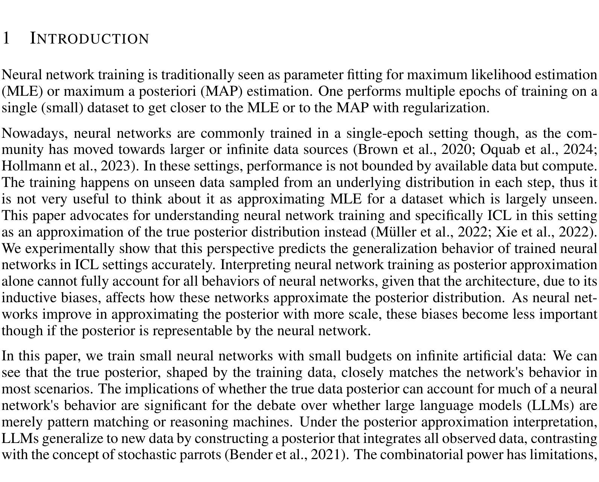
输入 x 包含上下文和查询，qθ(y|x) 是网络输出的条件分布，p(y|x) 由训练生成过程定义。
E[−log qθ(y|x)] = Eₓ[H(p(·|x)) + KL(p(·|x)∥qθ(·|x))]。熵项与 θ 无关，所以两者的最优参数相同。
精确匹配需要足够数据、足够表达能力与到达最优的训练，并且结论由训练输入分布 p(x) 加权。
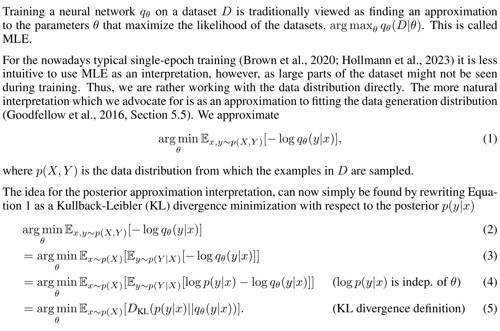
一个任务先抽潜变量 l，再依此产生上下文 D={(xᵢ,yᵢ)}。查询 x* 与 D 一起输入模型，输出 y* 的预测分布。
后验预测分布 PPD 为 ∫ p(y*|x*,l)p(l|D) dl。它汇总多个仍与上下文相容的任务。
潜变量可以是一条阶跃的位置和高度。后验均值可以平滑，即使任意单个潜变量都是阶跃。
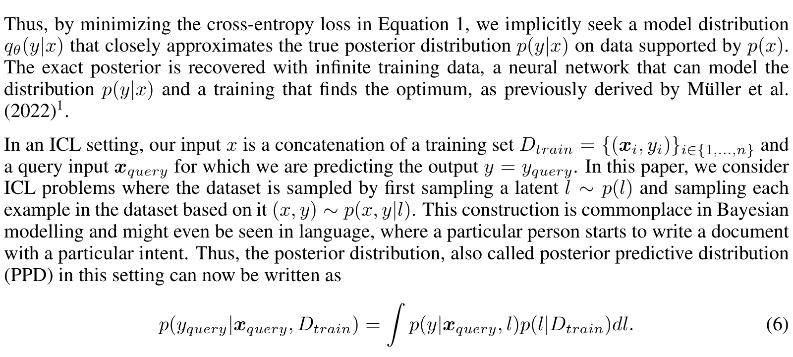
把 l 限制在有限集合 L，积分变为加权求和。等概率先验下，权重正比于每个潜变量对全部上下文的似然。
默认输出噪声为高斯，标准差 0.1。精确 PPD 是基准，PFN 是其学习近似，两者必须分别观察。
论文图 1–5、8、10–11主要展示预测均值，均值相近不能单独证明完整预测分布或校准相近。
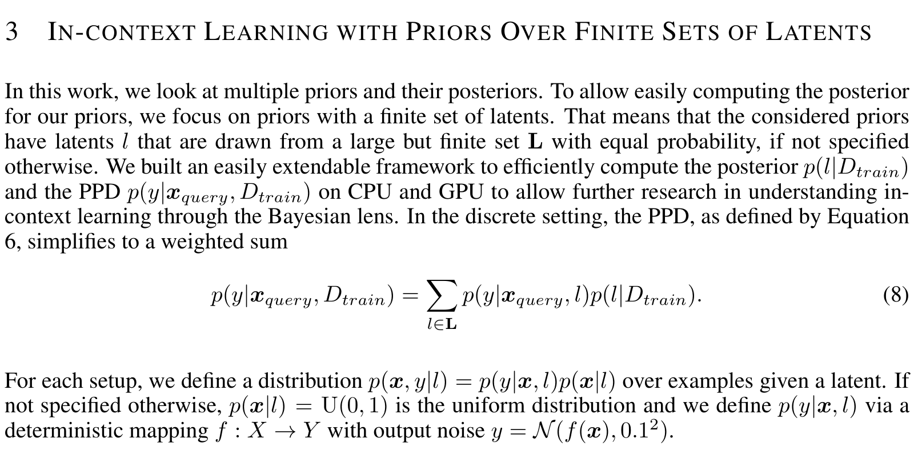
Δx、Δy 均取 −1 到 1，步长 0.02；h 取 0 到 2，步长 0.02。每项有 101 个网格点。
f(x)=Δy（x<Δx），否则 f(x)=Δy+h。不同阶跃在后验中混合，可得到逐步变化的均值。
共 101³=1,030,301 个参数组合（教学计数，部分函数可能等价）。这解释了图 1 的平滑输出，但不保证任何可表示曲线都获高权重。
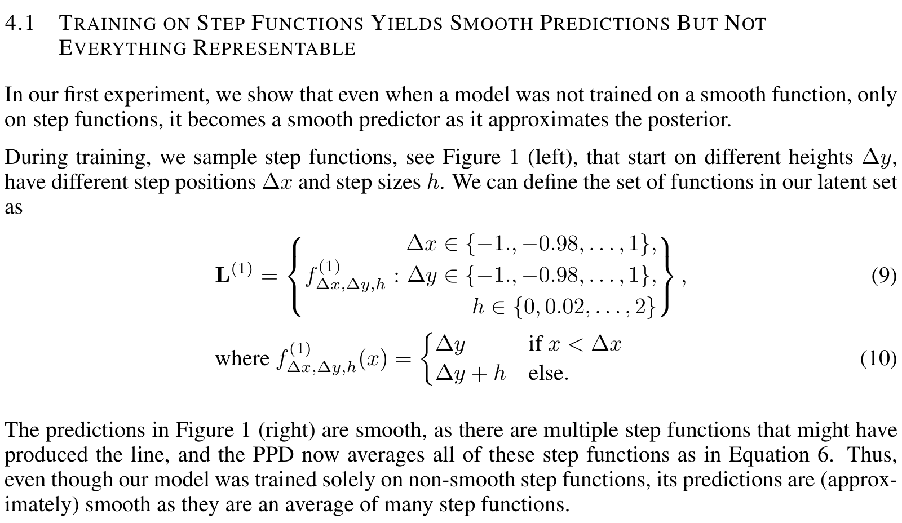
fΔx(x)=0.2 sin(3πx+Δx)，相位在 0 至 2π 上按 2π/100 取值。端点相位对应同一条曲线。
振幅和频率固定，仅改变相位。面对不同频率的上下文，多个相位可能仍有相似权重，平均后的振荡减弱。
图 2 的平坦输出说明网络能接近失配先验的后验，不能据此说它识别并恢复了新频率。
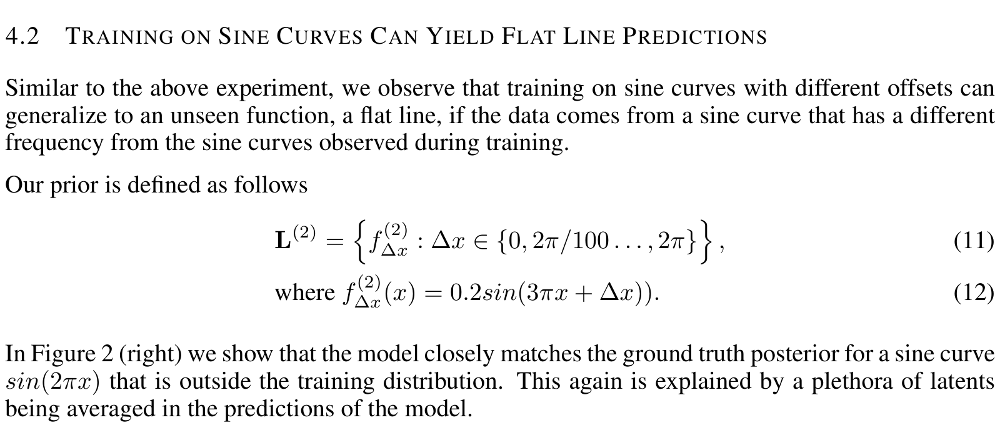
先验均匀混合正弦类与斜线类。斜线 f(x)=mx+Δy，m 与 Δy 在 −1 至 1、步长 0.02 的网格取值。
正弦与斜线都能解释部分上下文时，后验均值可包含振荡与趋势，表现为轻微倾斜的正弦。
这依赖两类的后验权重。图 5 和图 11 表明，可组合出某形状与贝叶斯更新实际选择该组合是两个条件。
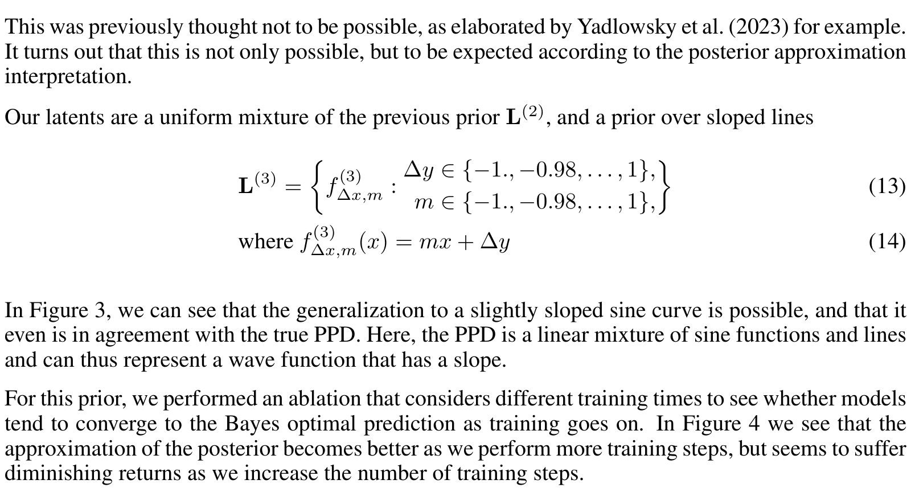
图 4 固定斜正弦任务，比较 100 至 12,800 步的八个检查点。黑点为上下文，蓝线为精确后验，橙线为 PFN。
图上平均损失依次为 −0.02、−0.28、−0.11、−0.39、−0.74、−0.80、−0.81、−0.82。200 到 400 步并不单调。
这些是连续回归密度的负对数损失，允许为负。图中没有分类准确率、误差条或统一 OOD 排行。
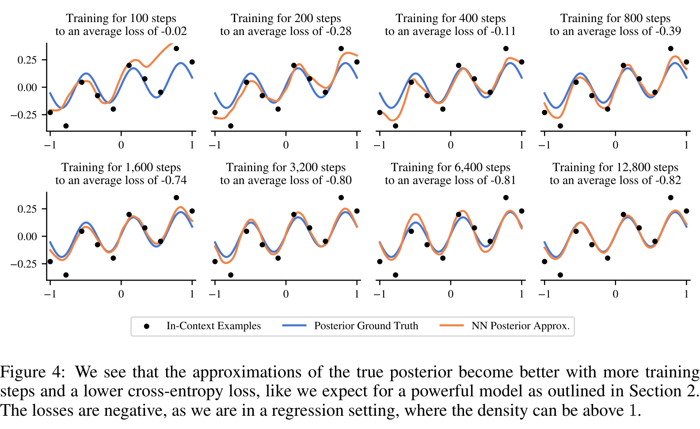
图 6 的真实硬币是 p=0.5，先验只允许 p=0.3 或 p=0.6。后验平均预测随样本增加趋向 0.6。
原因是似然比累乘。更多数据强化较接近但仍错误的潜变量。这里“指数”描述相对权重变化，不是准确率无限下降。
图 11、12 给出函数回归中的相关例子。改善网络近似无法自动修复先验失配。
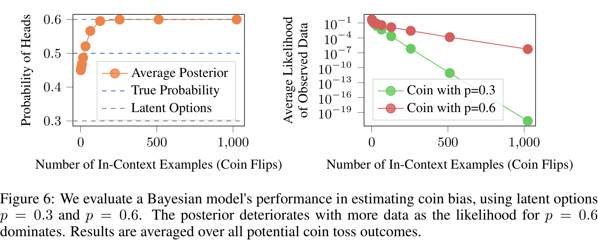
图 8 的数据似然从 5.74×10⁻¹ 降到 1.44×10⁻¹⁶，PFN 与精确后验逐渐偏离，呈现近邻式捷径。
图 7 比较确定输入与加高斯噪声输入的 100 个 MLP。图 9 研究重复正面样本，所用无位置编码 PFN 无法响应重复计数。
失效须分开诊断：先验失配、低支持样本的近似不足、或架构无法表达所需统计量。
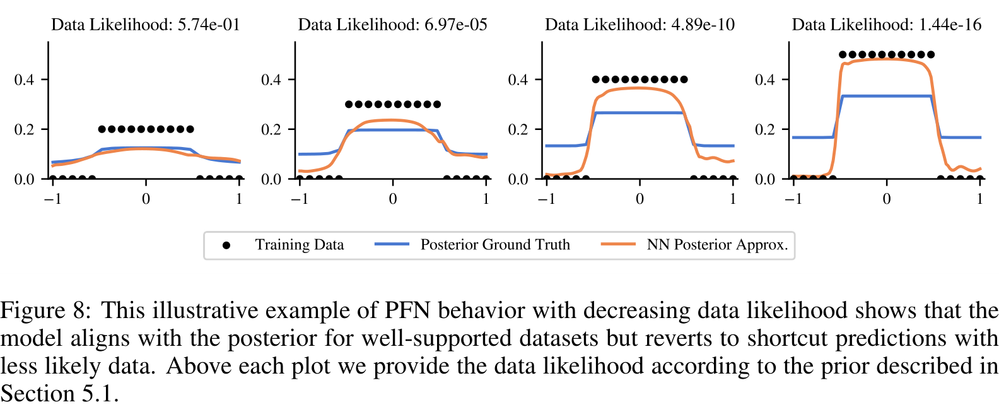
DMD 指数字微镜器件。论文支持把合成先验与实测任务的匹配作为检查对象。它没有验证 DMD 掩模设计或任何细菌识别效果。
研究建议：先以独立菌株、培养批次和采集日上的分类准确率选择方案，再把测量时间作为次级约束。与全谱、固定掩模及相同输入的强基线公平比较。
核查失配、概率校准与重复光谱计数。新增光谱后准确率下降时，应同时检查信息泄漏、数据依赖、先验偏差和模型表达能力。
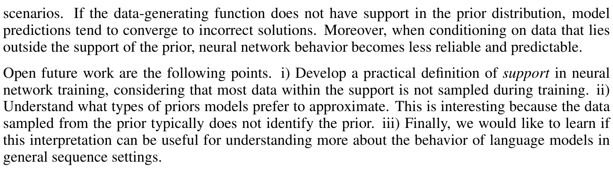
离线训练：从先验抽一个任务 l，生成上下文与查询标签，以 −log qθ(y*|x*,D) 更新共享参数 θ。
使用阶段：固定 θ，将新上下文与查询前向输入 PFN。上下文改变预测分布，无需在该任务上再次优化 θ。
原文网格：层数 4/8，批量 32/64，嵌入宽度 128/256/512，Adam 学习率 0.0001/0.0003/0.001，步数 10万/20万/40万。上下文数量在 1–100 均匀抽样，按最终训练损失选配置。
区分“训练更新参数”和“上下文更新条件预测”，可避免把 ICL 当作每个任务都运行梯度下降。
| 阶段 | 已知输入 | 被更新对象 | 输出 |
| 离线训练 | D、x*、y* | 共享参数 θ | 训练好的 PFN |
| 任务预测 | D、x* | 条件预测，不更新 θ | qθ(y*|x*,D) |
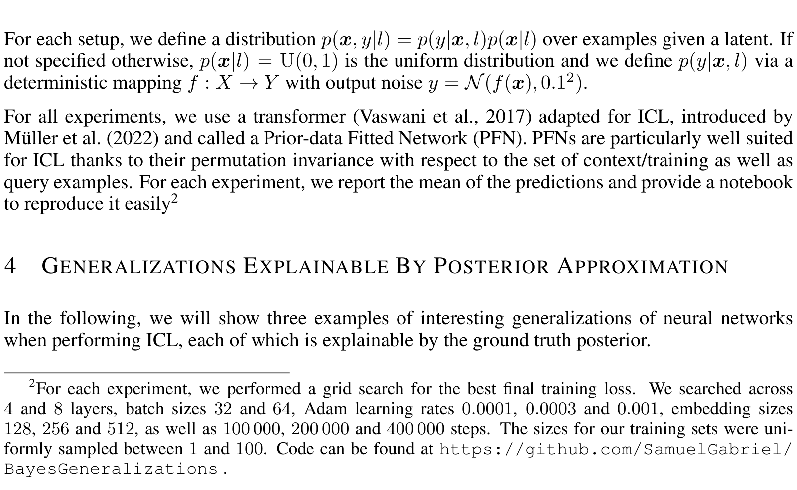
设三个候选任务等先验。在一个观察点，它们给出均值 0、0.1、0.2。观测 y=0.1，噪声标准差 0.1。
省略共同正态化常数，似然为 exp(−0.5)、1、exp(−0.5)。归一化后权重约为 0.2741、0.4519、0.2741。
这些数字是手工教学计算，用来说明式 (8) 的权重。它们不来自论文实验。
| 候选 | 预测均值 | 相对似然 | 后验权重 |
| l₁ | 0 | 0.6065 | 0.2741 |
| l₂ | 0.1 | 1 | 0.4519 |
| l₃ | 0.2 | 0.6065 | 0.2741 |
延续三个候选任务。设查询处均值分别为 0、0.2、0.8，权重为 0.2741、0.4519、0.2741。
预测均值约为 0.3096。若每个候选的噪声方差都是 0.01，总预测方差约为 0.1076。
方差包括候选内部噪声和候选之间的均值差异。只画一条均值线会隐藏多峰性或不确定性。
只取三个高度为 1 的阶跃，阈值分别为 0.25、0.5、0.75，各占后验权重 1/3。
预测均值在四个区间为 0、1/3、2/3、1。阈值更密时，平均形状可更接近平滑斜线。
离散有限混合仍可能保留很小的跳变，因此论文使用“近似平滑”。这是形状生成示例，不等同于其完整先验。
| 查询区间 | <0.25 | 0.25–0.5 | 0.5–0.75 | ≥0.75 |
| 平均输出 | 0 | 1/3 | 2/3 | 1 |
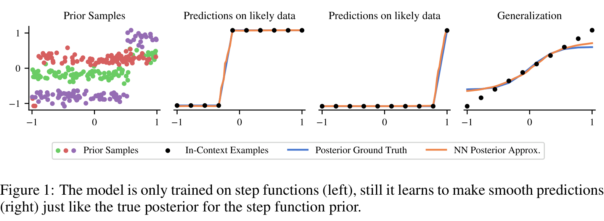
构造两条阶跃，使它们各以 50% 权重平均后形成一个平台。图 5 中间展示这两个潜变量。
每个潜变量单独预测上下文时都错过一侧。生成模型假定整个任务由一个潜变量生成，后验按这个假定计算似然。
所以“找一组拟合均值的权重”和“按任务生成过程做贝叶斯更新”可能得到不同答案。
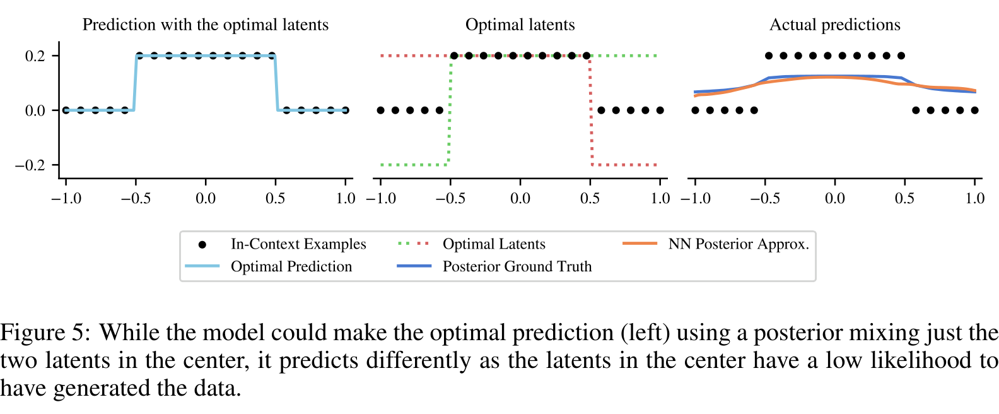
等先验下，观察 k 个正面与 n−k 个反面，p=0.6 相对 p=0.3 的后验比为 2ᵏ(4/7)ⁿ⁻ᵏ。
若 n 为偶数且恰好一半正面，该比值为 (8/7)ⁿᐟ²。n=100 时约 793.6，预测下一次正面的概率约 0.5996。
这是特定平衡序列的教学推导。图 6 对所有可能结果取平均，不能把本页数值当作图 6 的原始数据点。
图 9 的先验 p 在 0.01、0.02、…、0.99 上均匀分布。输入 n 个正面后，某个 p 的后验权重正比于 pⁿ。
下一次正面概率为 Σpⁿ⁺¹/Σpⁿ。n=1 时约 0.6633，n=2 时约 0.7462，n=10 时约 0.9120。
该统计量需要识别样本个数。论文所测无位置编码的编码器 PFN 在完全重复输入下给出不随数量变化的预测。
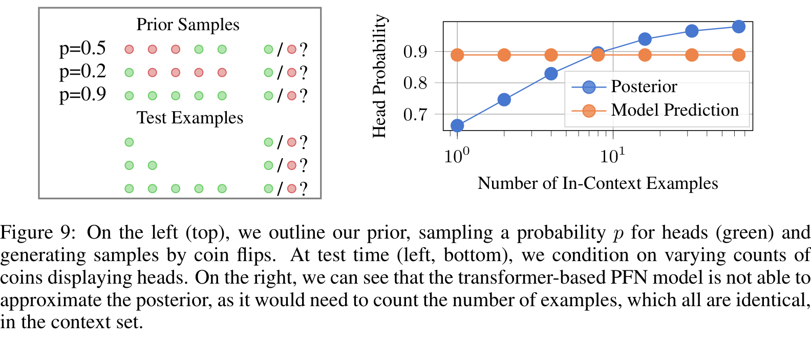
潜变量支持不足：真实任务不在 L 内，但观测在噪声模型下仍有正密度。此时后验存在，却可能趋向错误解释。
输入支持之外：训练输入的 p(x)=0，论文的 p(y|x)=p(x,y)/p(x) 无法在该点定义。网络仍有输出，但训练风险未约束该处。
连续变量在单点的概率总为零。本节说的 p(x)=0 应按密度或生成分布的支持理解，不能用“单点概率为零”误判所有输入。
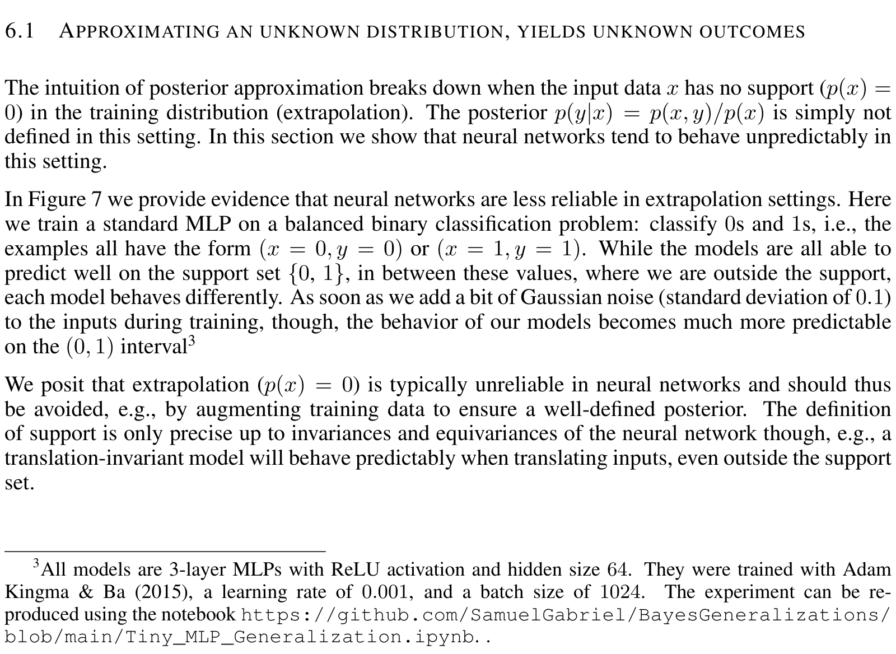
图 2 图注把“波长 2 与 3”写在一起；式 (12) 用 3πx，正文测试用 2πx。课件按公式讲频率系数变化，不把 2、3当作物理波长。
图 7 图注把 noiseless 标成右侧，但图标题明确左侧为 Deterministic features、右侧为 Noisy Features。课件按图标题与 §6.1解释。
式 (13)–(14) 的函数下标写 Δx，但网格和公式用 Δy。课件用斜率 m 与截距 Δy，并保留原截图供核对。
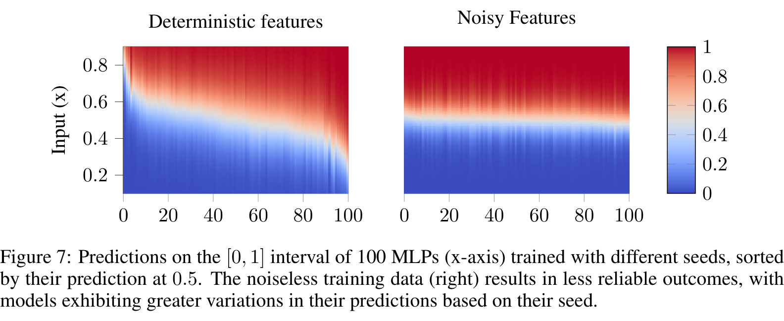
图 10 图注说展示网格搜索中八个最好模型，子图同时标出 0.21–0.28 的不同斜率。无法把它读成固定任务上的八次随机种子对照。
图 3 等图的横轴展示 −1 至 1；§3 默认输入却写 U(0,1)。课件保留两者，不擅自统一或据图轴推断训练采样范围。
图 12 的反例针对固定 RBF 核及其超参数下的置信行为。它不等于“所有高斯过程都无法逼近阶跃”。
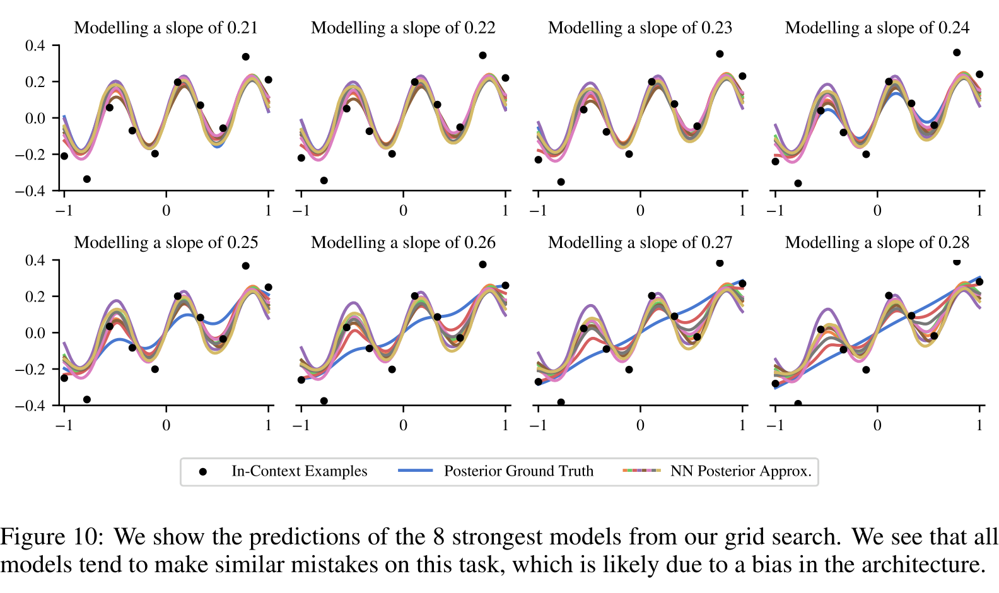
可把潜变量分成菌种相关谱形、培养状态和仪器扰动。DMD 掩模与光学响应共同把潜在光谱转成观测。
教学模型 z=Aφs+ε：s 为光谱，φ 为掩模，Aφ 为经过标定的测量算子。噪声可进一步包含光子计数、读出与背景项。
此模型是待验证的研究示意。若模拟漏掉峰位漂移或荧光背景，精确后验也可能偏向错误菌种。
| 对象 | 研究中需要记录的量 |
| 潜在谱 s | 菌株、培养状态、谱峰与背景 |
| 测量 Aφ | DMD 掩模、光学通量、仪器响应 |
| 观测 z | 曝光、重复次数、校准和噪声条件 |
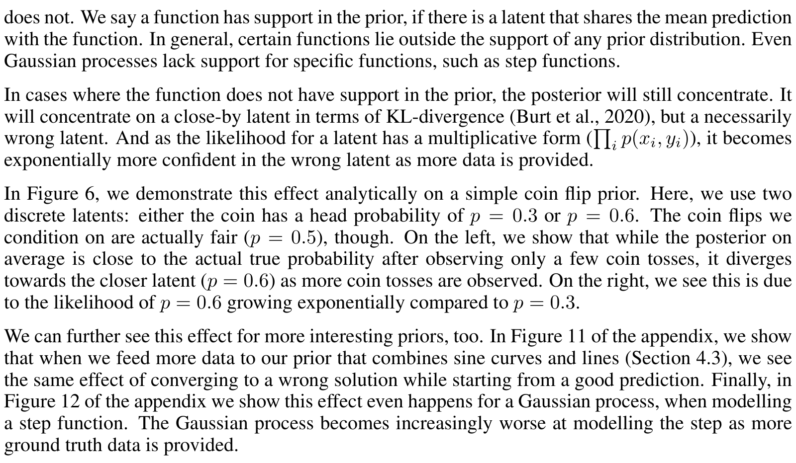
主结局使用独立测试集分类准确率，并报告每类召回、混淆矩阵和置信区间。类别不均衡时另报宏平均指标。
在相同菌株分组、训练量、调参预算与测试集上，比较全谱、固定掩模、学习掩模，以及相同观测输入下的强分类基线。
光子预算与曝光时间要说明匹配方式。全谱若只作性能上界，明确它与压缩测量资源不同，避免把优势全归于分类算法。
按独立菌株或生物重复分组，再按培养批次、采集日或设备留出验证。重复扫描不能随机散落到训练与测试两边。
增加上下文光谱时，画准确率随独立样本数变化的曲线，同时观察校准和低置信错误，检验是否出现图 11 类似退化。
阈值、掩模和模型选择只使用训练与验证数据。测试集保持锁定；这些流程是研究设计建议，论文未给出拉曼上的效果数值。
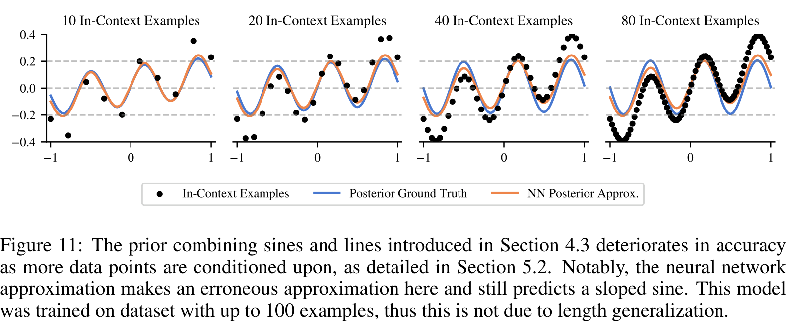
模拟内部失败：先固定生成器，比较可计算的小先验后验与 PFN，检查网络近似和重复输入响应。
模拟到实测失败：检查噪声、背景和峰漂移等先验覆盖，再与实测训练的强基线比较。
外部测试失败：核查标签、菌株泄漏、设备或培养域偏移。只有在独立测试准确率改善后，才继续讨论更快或更少测量。
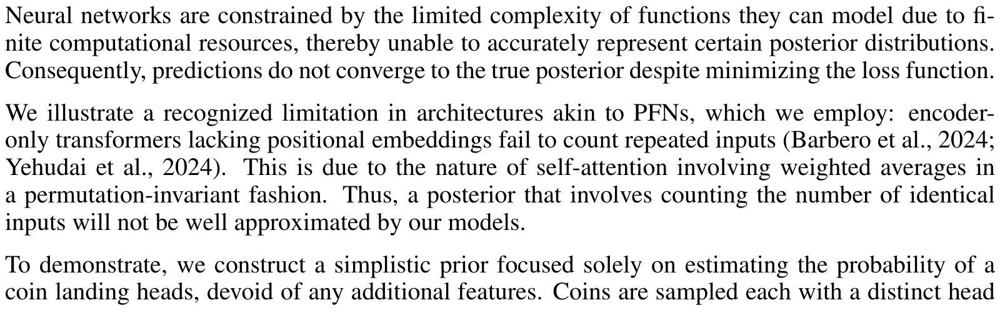
数据来自有限阶跃先验。前三个画面依次展示先验样本与两个分布内上下文，最右给出平滑泛化。
对照为蓝色精确 PPD 与橙色 PFN 均值。黑点是上下文，彩色散点仅示先验函数样本。
证据是曲线形状的一致性，没有数值误差指标或真实任务准确率。
各条彩色样本来自不同阶跃任务。单个任务只有一个跳变，采样范围由式 (9) 定义。
定位按原图从左至右、从上至下编号。子图未新增或删改数据，完整图、原图图例与上下文可点击旁侧缩略图查看。
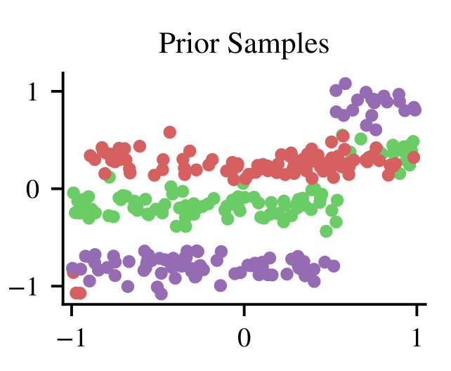
黑点接近一条向上阶跃，蓝线与橙线主要重合。这里先核查网络是否掌握训练任务。
定位按原图从左至右、从上至下编号。子图未新增或删改数据，完整图、原图图例与上下文可点击旁侧缩略图查看。
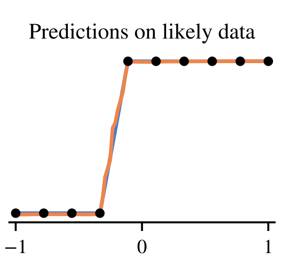
换一个阶跃高度与位置后，PFN 仍接近精确后验。这仍是先验可解释的任务。
定位按原图从左至右、从上至下编号。子图未新增或删改数据，完整图、原图图例与上下文可点击旁侧缩略图查看。
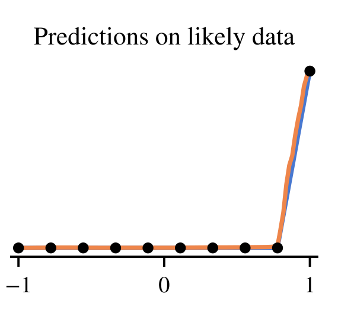
上下文呈斜线趋势。多个阶跃阈值均有后验质量，均值呈近似平滑曲线。没有训练过该均值形状不代表超越先验后验。
定位按原图从左至右、从上至下编号。子图未新增或删改数据，完整图、原图图例与上下文可点击旁侧缩略图查看。
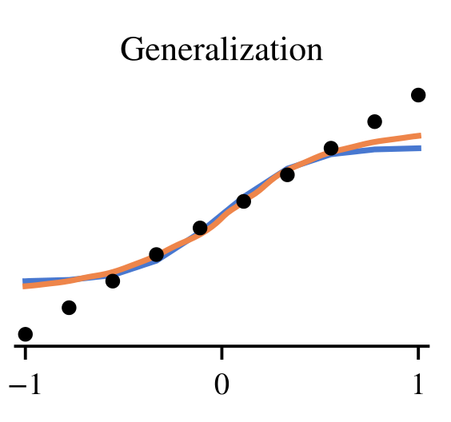
训练函数的振幅固定为 0.2，角频率系数为 3π，只改变相位。测试右图使用不同频率的上下文。
蓝线为精确后验均值，橙线为 PFN。右图两者接近平坦；这反映多个相位的平均。
图注“波长 2/3”的措辞与公式不一致。本课件按式 (12) 与正文的 3π、2π解释。
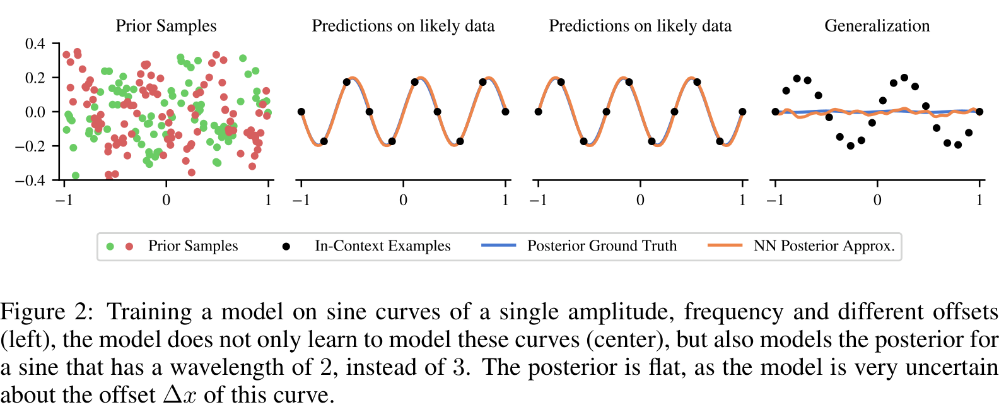
彩色曲线相位不同，振幅和角频率相同。不能把颜色理解为不同菌类或不同网络。
定位按原图从左至右、从上至下编号。子图未新增或删改数据，完整图、原图图例与上下文可点击旁侧缩略图查看。
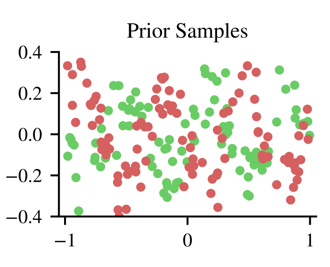
上下文与先验频率相容，后验聚集到相容相位，PFN 接近蓝色后验均值。
定位按原图从左至右、从上至下编号。子图未新增或删改数据，完整图、原图图例与上下文可点击旁侧缩略图查看。
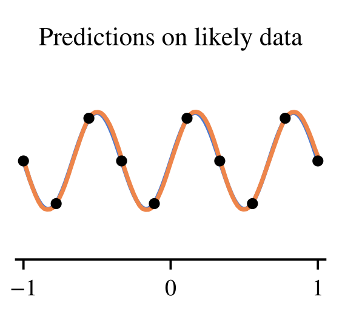
第二组相位不同的上下文同样得到接近的预测。它帮助区分相位变化与频率失配。
定位按原图从左至右、从上至下编号。子图未新增或删改数据，完整图、原图图例与上下文可点击旁侧缩略图查看。
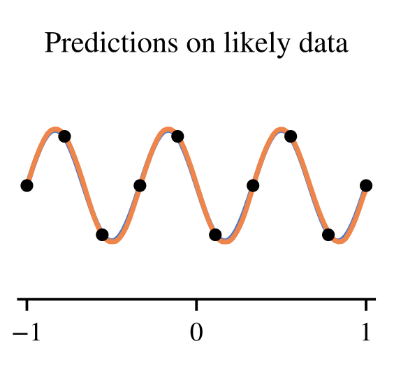
黑点来自另一频率。平均多个可能相位使输出接近平坦。橙蓝相近说明后验近似吻合，不能证明恢复了真实正弦。
定位按原图从左至右、从上至下编号。子图未新增或删改数据，完整图、原图图例与上下文可点击旁侧缩略图查看。
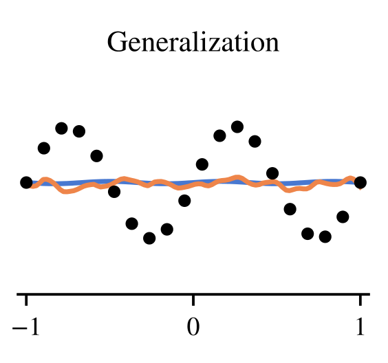
训练先验混合正弦与斜线。两个中间子图分别验证两类分布内任务，右图检验轻微倾斜的正弦。
精确后验与 PFN 均值在右图接近。解释来自概率混合，不需要假定网络产生了新的潜变量函数。
图中先验与预测子图的纵轴范围不同。视觉幅度比较必须先看坐标。
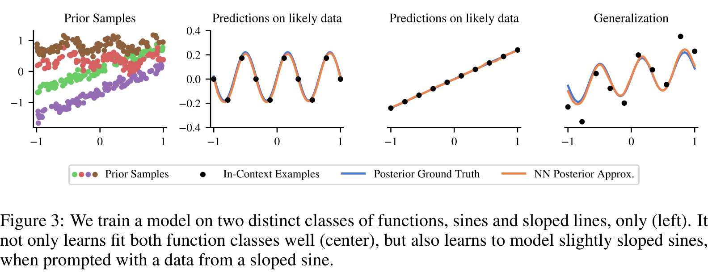
先验包含正弦和斜线，右侧预测的纵轴缩放与本图不同。类别混合比例与类内潜变量权重要分开理解。
定位按原图从左至右、从上至下编号。子图未新增或删改数据，完整图、原图图例与上下文可点击旁侧缩略图查看。
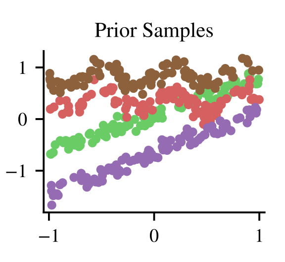
黑点为水平正弦任务，蓝橙线接近。说明混合先验仍可选择正弦成分。
定位按原图从左至右、从上至下编号。子图未新增或删改数据，完整图、原图图例与上下文可点击旁侧缩略图查看。
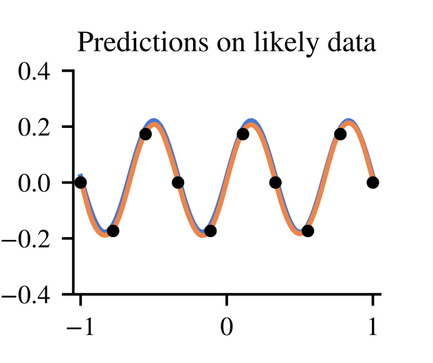
黑点落在上升直线附近，后验主要支持斜线成分。它是另一类训练任务的检查。
定位按原图从左至右、从上至下编号。子图未新增或删改数据，完整图、原图图例与上下文可点击旁侧缩略图查看。
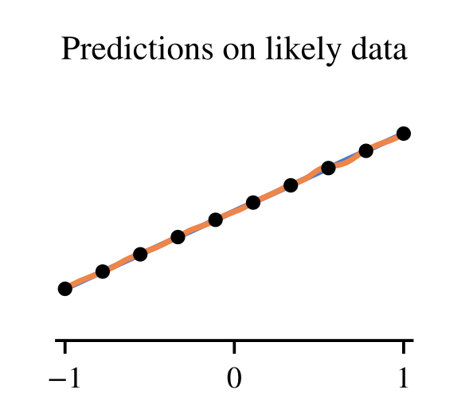
蓝橙均值同时带趋势与振荡。该结果只覆盖本图上下文和先验；更多样本时的退化见图 11。
定位按原图从左至右、从上至下编号。子图未新增或删改数据，完整图、原图图例与上下文可点击旁侧缩略图查看。
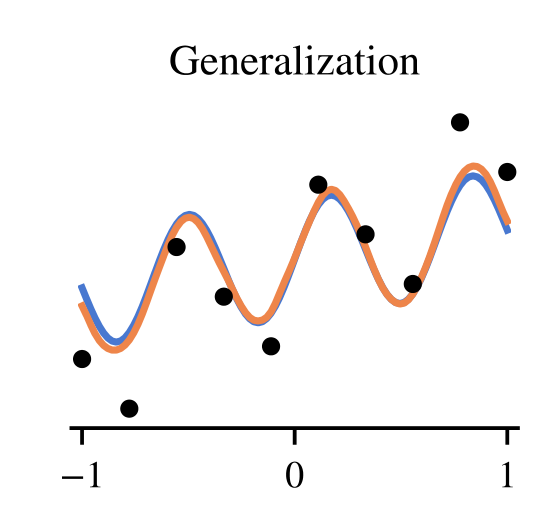
固定任务与上下文，比较 100、200、400、800、1,600、3,200、6,400、12,800 步。
总体上蓝橙更接近，后期损失改变量较小。200 到 400 步的损失从 −0.28 变为 −0.11，存在反向变化。
连续密度可大于 1，所以负对数损失可为负。不能解释成负错误率或超过 100% 的准确率。
早期橙线偏离蓝线，说明尚未充分逼近后验。
定位按原图从左至右、从上至下编号。子图未新增或删改数据，完整图、原图图例与上下文可点击旁侧缩略图查看。
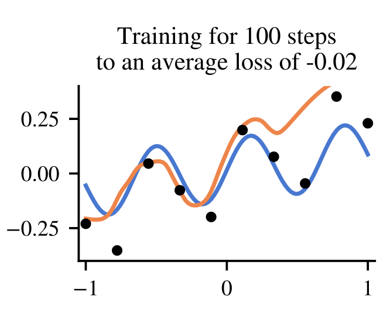
相比 100 步损失降低，但仍有曲线差异。
定位按原图从左至右、从上至下编号。子图未新增或删改数据，完整图、原图图例与上下文可点击旁侧缩略图查看。
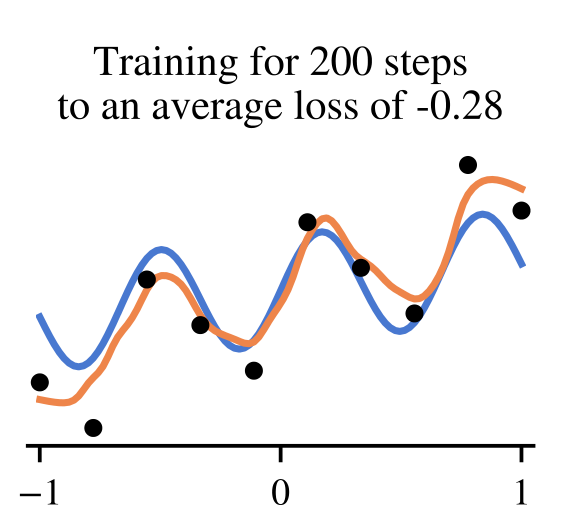
损失比 200 步更高，不能把训练过程说成逐点单调。
定位按原图从左至右、从上至下编号。子图未新增或删改数据，完整图、原图图例与上下文可点击旁侧缩略图查看。
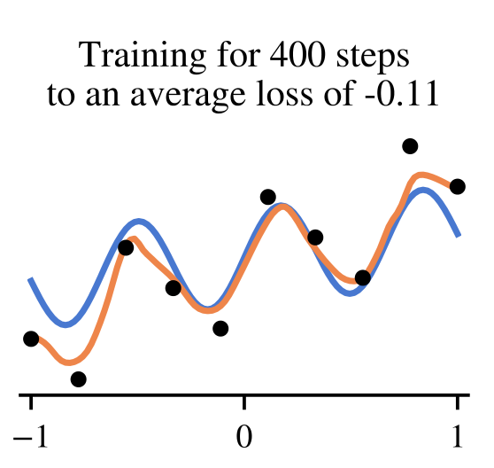
蓝橙距离比早期更小，仍应检查局部差异。
定位按原图从左至右、从上至下编号。子图未新增或删改数据，完整图、原图图例与上下文可点击旁侧缩略图查看。
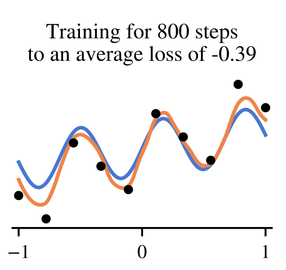
损失下降到 −0.74，曲线接近真实后验。
定位按原图从左至右、从上至下编号。子图未新增或删改数据，完整图、原图图例与上下文可点击旁侧缩略图查看。
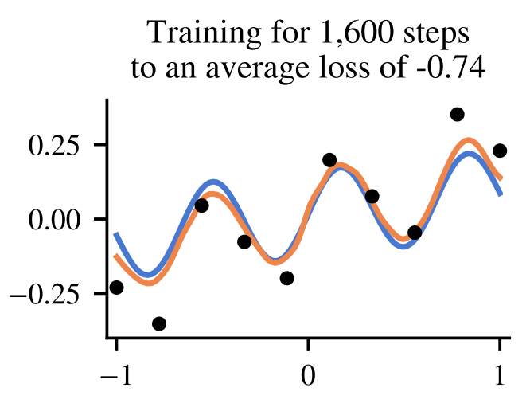
相对 1,600 步继续改善，改变量已缩小。
定位按原图从左至右、从上至下编号。子图未新增或删改数据，完整图、原图图例与上下文可点击旁侧缩略图查看。
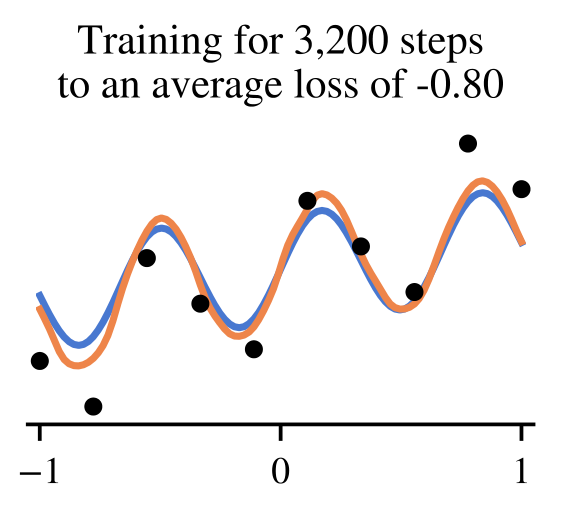
损失只比前一检查点低 0.01，接近后期平台。
定位按原图从左至右、从上至下编号。子图未新增或删改数据，完整图、原图图例与上下文可点击旁侧缩略图查看。
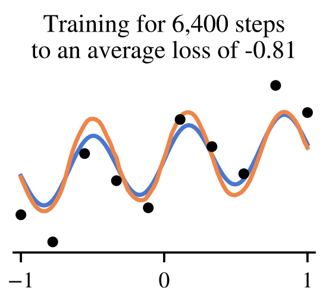
图示最后一个检查点，损失 −0.82，不代表所有 OOD 输入都已收敛。
定位按原图从左至右、从上至下编号。子图未新增或删改数据，完整图、原图图例与上下文可点击旁侧缩略图查看。
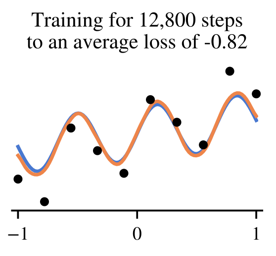
扩展阶跃先验，允许负阶跃 h∈{−1,−0.98,…,1}。目标为先上升再下降的平台。
左图是能拟合目标的理想均值，中图是各占 50% 的两个潜变量，右图是真实后验与 PFN。
右图更平，是因为中图潜变量各自对一侧数据解释差，贝叶斯更新不给它们理想混合权重。
蓝色理想均值跟随平台形上下文。这证明该形状可由候选函数混合表示，尚未证明后验会选择它。
定位按原图从左至右、从上至下编号。子图未新增或删改数据，完整图、原图图例与上下文可点击旁侧缩略图查看。
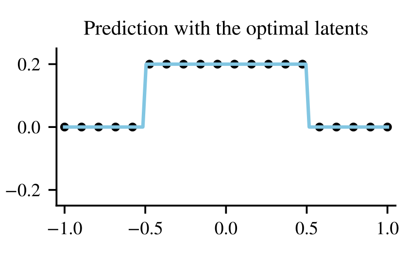
一个向上、一个向下的阶跃可以各以 50% 混合成平台。但每个候选在平台一侧都与黑点不符。
定位按原图从左至右、从上至下编号。子图未新增或删改数据，完整图、原图图例与上下文可点击旁侧缩略图查看。
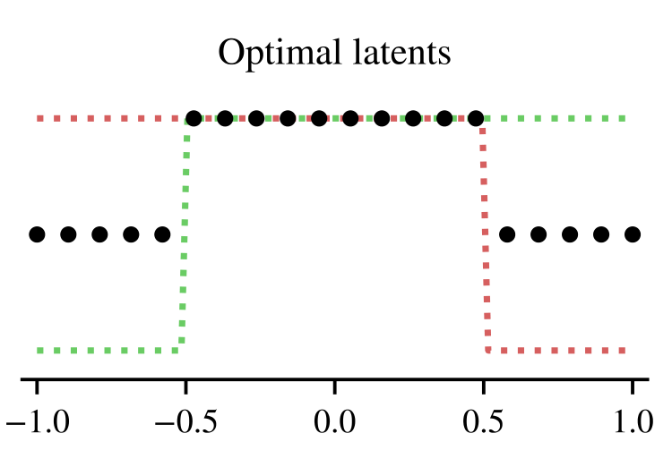
蓝色后验和橙色 PFN 都比平台平。这里主要问题在后验本身，不能只归咎于网络训练不充分。
定位按原图从左至右、从上至下编号。子图未新增或删改数据，完整图、原图图例与上下文可点击旁侧缩略图查看。
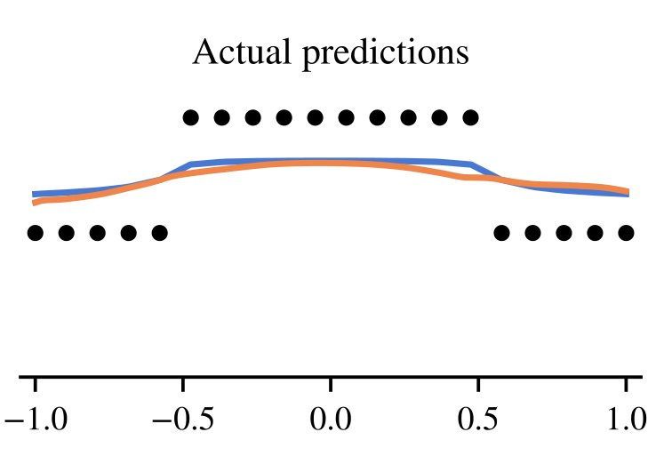
真值是公平硬币 p=0.5，模型先验只允许 0.3 与 0.6。结果对所有可能抛掷结果平均。
左图纵轴为预测正面概率；右图纵轴为观测数据平均似然的对数刻度。横轴均为抛掷次数。
两种绝对似然都下降，但 p=0.6 的相对似然更大。指数变化是相对证据积累，不代表误差无上界。
曲线由约 0.45 逐渐趋向 0.6，真实概率水平线在 0.5。更长上下文强化了离真值更近但仍错误的选项。
定位按原图从左至右、从上至下编号。子图未新增或删改数据，完整图、原图图例与上下文可点击旁侧缩略图查看。
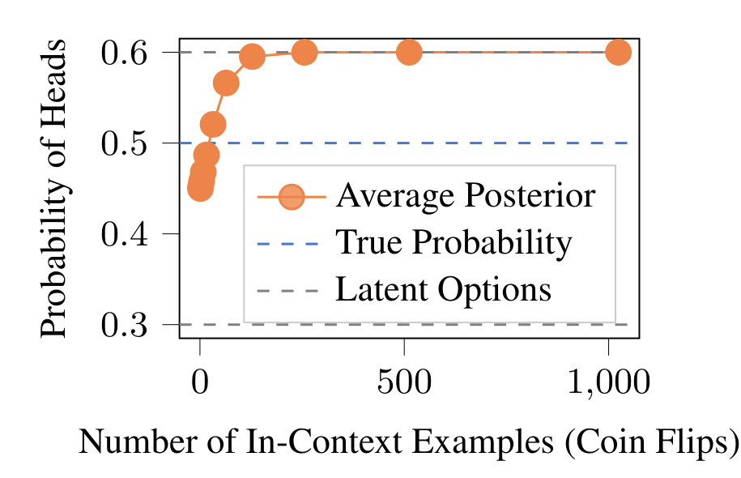
红色 p=0.6 与绿色 p=0.3 的平均似然都变小；绿色下降更快。对数刻度上的差距说明相对证据越来越偏向 0.6。
定位按原图从左至右、从上至下编号。子图未新增或删改数据，完整图、原图图例与上下文可点击旁侧缩略图查看。
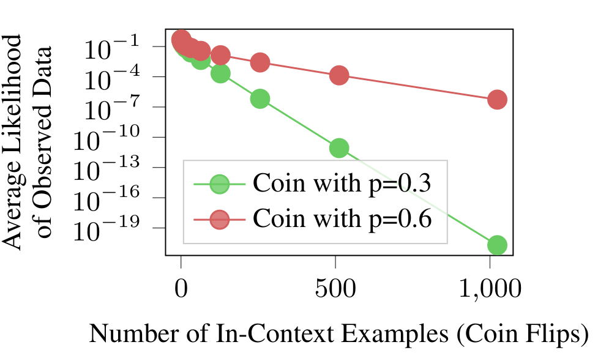
100 个三层 ReLU MLP，隐藏宽度 64，Adam 学习率 0.001，批量 1024；按 x=0.5 处的预测排序。
确定训练输入只有 0 与 1。右图在训练输入加入标准差 0.1 的高斯噪声，标签仍对应二分类任务。
横轴是模型/随机种子，纵轴是输入 x，颜色为预测。图注把 noiseless 写为右侧，与标题相反，本课件按标题解释。
训练仅覆盖 x∈{0,1}。中间位置不属于这个离散训练输入支持，模型间的分界位置随种子变化。右侧色标见完整图。
定位按原图从左至右、从上至下编号。子图未新增或删改数据，完整图、原图图例与上下文可点击旁侧缩略图查看。
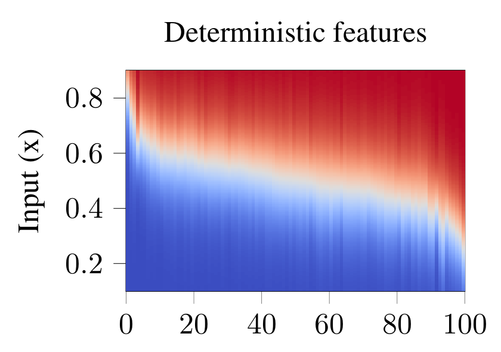
高斯噪声让中间区间获得非零密度，图中模型输出更一致。这里证明的是该合成对照的种子稳定性，不是任何噪声增强都提高准确率。
定位按原图从左至右、从上至下编号。子图未新增或删改数据，完整图、原图图例与上下文可点击旁侧缩略图查看。
使用 §5.1 的含正负阶跃先验。逐渐增加平台与底部的间距，使整组数据越来越不受先验支持。
四个子图的数据似然依次为 5.74×10⁻¹、6.97×10⁻⁵、4.89×10⁻¹⁰、1.44×10⁻¹⁶。
黑点为上下文，蓝线为精确后验，橙线为 PFN。低似然时橙线更贴近局部黑点，偏离蓝线。
最高似然的子图中，蓝橙均值接近。黑点平台与底部的距离最小。
定位按原图从左至右、从上至下编号。子图未新增或删改数据，完整图、原图图例与上下文可点击旁侧缩略图查看。
似然降低后，两种预测开始可见分离。相同坐标缩放下比较蓝橙差距。
定位按原图从左至右、从上至下编号。子图未新增或删改数据，完整图、原图图例与上下文可点击旁侧缩略图查看。
PFN 更明显跟随平台形黑点，精确后验则更保守。低似然并未使后验无定义。
定位按原图从左至右、从上至下编号。子图未新增或删改数据，完整图、原图图例与上下文可点击旁侧缩略图查看。
似然最低时差异最大。这个值是该组数据在先验下的似然，不是分类置信度或可通用的拒识阈值。
定位按原图从左至右、从上至下编号。子图未新增或删改数据，完整图、原图图例与上下文可点击旁侧缩略图查看。
训练任务先抽 p∈{0.01,0.02,…,0.99}，再生成伯努利标签。测试上下文全部是正面，但数量不同。
精确后验应随着正面次数增加而上升。右图 PFN 预测保持近似不变，不能表达这一计数依赖。
限制针对文中使用的无位置编码、编码器式 PFN。图中没有对所有 Transformer 架构作普遍否定。
上半部用 p=0.5、0.2、0.9示意不同硬币任务。下半部改变全正面上下文长度，目标是预测下一次抛掷。
定位按原图从左至右、从上至下编号。子图未新增或删改数据，完整图、原图图例与上下文可点击旁侧缩略图查看。
横轴是对数刻度上下文数量，纵轴为正面概率。蓝色后验随数量增加，橙色网络几乎不变，暴露完全重复输入的计数限制。
定位按原图从左至右、从上至下编号。子图未新增或删改数据，完整图、原图图例与上下文可点击旁侧缩略图查看。
附录图注说使用网格搜索中最强的八个模型；八个子图标题同时显示斜率从 0.21 至 0.28，每个子图叠加八个强模型的多色曲线。
正文指出模型倾向于高估正弦分量。相似偏差与架构偏置相容，但此图并未隔离全部因果因素。
不能把不同斜率子图当作同一数据上的八次随机种子试验，也不能从曲线估计未报告的显著性。
原图该子图标题给出斜率 0.21。比较黑点、蓝色后验与多色网络曲线的峰谷振幅。每个斜率子图都含八个强模型的预测，子图未列各模型配置。
定位按原图从左至右、从上至下编号。子图未新增或删改数据，完整图、原图图例与上下文可点击旁侧缩略图查看。
原图该子图标题给出斜率 0.22。比较黑点、蓝色后验与多色网络曲线的峰谷振幅。每个斜率子图都含八个强模型的预测，子图未列各模型配置。
定位按原图从左至右、从上至下编号。子图未新增或删改数据，完整图、原图图例与上下文可点击旁侧缩略图查看。
原图该子图标题给出斜率 0.23。比较黑点、蓝色后验与多色网络曲线的峰谷振幅。每个斜率子图都含八个强模型的预测，子图未列各模型配置。
定位按原图从左至右、从上至下编号。子图未新增或删改数据，完整图、原图图例与上下文可点击旁侧缩略图查看。
原图该子图标题给出斜率 0.24。比较黑点、蓝色后验与多色网络曲线的峰谷振幅。每个斜率子图都含八个强模型的预测，子图未列各模型配置。
定位按原图从左至右、从上至下编号。子图未新增或删改数据，完整图、原图图例与上下文可点击旁侧缩略图查看。
原图该子图标题给出斜率 0.25。比较黑点、蓝色后验与多色网络曲线的峰谷振幅。每个斜率子图都含八个强模型的预测，子图未列各模型配置。
定位按原图从左至右、从上至下编号。子图未新增或删改数据，完整图、原图图例与上下文可点击旁侧缩略图查看。
原图该子图标题给出斜率 0.26。比较黑点、蓝色后验与多色网络曲线的峰谷振幅。每个斜率子图都含八个强模型的预测，子图未列各模型配置。
定位按原图从左至右、从上至下编号。子图未新增或删改数据，完整图、原图图例与上下文可点击旁侧缩略图查看。
原图该子图标题给出斜率 0.27。比较黑点、蓝色后验与多色网络曲线的峰谷振幅。每个斜率子图都含八个强模型的预测，子图未列各模型配置。
定位按原图从左至右、从上至下编号。子图未新增或删改数据，完整图、原图图例与上下文可点击旁侧缩略图查看。
原图该子图标题给出斜率 0.28。比较黑点、蓝色后验与多色网络曲线的峰谷振幅。每个斜率子图都含八个强模型的预测，子图未列各模型配置。
定位按原图从左至右、从上至下编号。子图未新增或删改数据，完整图、原图图例与上下文可点击旁侧缩略图查看。
先验混合正弦与斜线。上下文数量依次为 10、20、40、80，蓝色精确后验逐渐减弱趋势，趋向无斜率正弦。
橙色 PFN 仍维持斜正弦形状。这一情形中，网络更像黑点并不代表它更忠实近似精确后验。
训练上下文最大为 100，四种数量均在范围内，作者据此排除单纯的长度外推解释。
少量上下文时，蓝色后验仍能表现倾斜正弦，橙色近似与其接近。
定位按原图从左至右、从上至下编号。子图未新增或删改数据，完整图、原图图例与上下文可点击旁侧缩略图查看。
更多数据增强潜变量之间的相对证据，蓝橙开始分离。
定位按原图从左至右、从上至下编号。子图未新增或删改数据，完整图、原图图例与上下文可点击旁侧缩略图查看。
精确后验的线性趋势进一步减弱，正弦振荡仍在，橙色网络继续追随上下文的倾斜波形。
定位按原图从左至右、从上至下编号。子图未新增或删改数据，完整图、原图图例与上下文可点击旁侧缩略图查看。
蓝色后验更接近无斜率正弦，橙色网络仍维持倾斜波形。80 仍低于训练上限 100，不能归因于超出训练长度。
定位按原图从左至右、从上至下编号。子图未新增或删改数据，完整图、原图图例与上下文可点击旁侧缩略图查看。
固定 RBF 核：长度尺度 0.4、输出尺度 1.0，常数均值，高斯噪声标准差 0.1。
上下文是阶跃函数上均匀排列的 10 至 400 个点。蓝线为真函数，橙线为 GP 均值，浅橙为原图标注的 95% CI。
随着样本增加，过平滑的模型在跳变附近仍偏离真值，而不确定区间收紧。不能仅凭此图断言每种总体误差都单调恶化。
稀疏观测下，跳变附近有较宽不确定区间，许多真实函数值仍处于该区间。
定位按原图从左至右、从上至下编号。子图未新增或删改数据，完整图、原图图例与上下文可点击旁侧缩略图查看。
采样更密后，跳变附近依旧由平滑曲线过渡，区间开始收缩。
定位按原图从左至右、从上至下编号。子图未新增或删改数据，完整图、原图图例与上下文可点击旁侧缩略图查看。
均值继续在不连续点附近平滑过渡。固定长度尺度不会因为加样本自动换成阶跃核。
定位按原图从左至右、从上至下编号。子图未新增或删改数据，完整图、原图图例与上下文可点击旁侧缩略图查看。
区间已较窄，但局部系统偏差仍存在。增加确定性真值点会增强失配模型的自信。
定位按原图从左至右、从上至下编号。子图未新增或删改数据，完整图、原图图例与上下文可点击旁侧缩略图查看。
在更密的点上，观察过冲与跳变附近的区间覆盖。不要将原图未给的数值误差自行读成精确值。
定位按原图从左至右、从上至下编号。子图未新增或删改数据，完整图、原图图例与上下文可点击旁侧缩略图查看。
最后一个条件，固定超参数的 GP 仍过平滑且局部过度自信。该例关注校准失败，不提供真实分类性能结论。
定位按原图从左至右、从上至下编号。子图未新增或删改数据，完整图、原图图例与上下文可点击旁侧缩略图查看。
题名、作者与摘要。引言把单轮训练解释为分布上的后验近似。主张的适用范围是文中受控实验。
全文原始截图，点击可按原始像素放大。论文共 12 页、图 1–12，无编号表格。
式 (1)–(5) 将交叉熵最优化转写为条件 KL；式 (6) 定义 ICL 后验预测。等价关系不能省略熵项与适用条件。
全文原始截图，点击可按原始像素放大。论文共 12 页、图 1–12，无编号表格。
图 1、式 (7)–(8) 以及有限先验与训练设置。脚注包含网络超参数搜索与专门复现仓库。
全文原始截图，点击可按原始像素放大。论文共 12 页、图 1–12，无编号表格。
图 2 与阶跃、正弦先验的完整公式。图注“波长”措辞和公式并不一致，课件已单独标明。
全文原始截图，点击可按原始像素放大。论文共 12 页、图 1–12，无编号表格。
图 3、斜线先验和图 4 的八个训练检查点。保留负损失与非单调检查点，不替换为准确率。
全文原始截图，点击可按原始像素放大。论文共 12 页、图 1–12，无编号表格。
图 5 的可表示性反例，以及图 6 的错误硬币先验。后验自身的失配和网络近似误差分开讨论。
全文原始截图，点击可按原始像素放大。论文共 12 页、图 1–12，无编号表格。
§5.2、§6.1。包含错误先验、输入支持、MLP 设置及代码链接。数据密度和单点概率不可混淆。
全文原始截图，点击可按原始像素放大。论文共 12 页、图 1–12，无编号表格。
图 7–8 与 §6.2–6.3。图 7 图注左右方位错误已按标题说明。低似然与架构限制是两类不同问题。
全文原始截图，点击可按原始像素放大。论文共 12 页、图 1–12，无编号表格。
图 9、硬币计数、相关工作与结论开头。重复输入的限制针对该架构设置，不扩展成所有模型的定理。
全文原始截图，点击可按原始像素放大。论文共 12 页、图 1–12，无编号表格。
结论剩余部分、未来工作和参考文献。保留整页，避免略去作者的开放问题。
全文原始截图，点击可按原始像素放大。论文共 12 页、图 1–12，无编号表格。
参考文献续页与附录图 10。八个强模型的子图同时改变斜率，不能当作严格固定任务消融。
全文原始截图，点击可按原始像素放大。论文共 12 页、图 1–12，无编号表格。
附录图 11–12。前者展示更多上下文下精确后验与网络分离，后者展示固定 RBF GP 的过度自信。
全文原始截图，点击可按原始像素放大。论文共 12 页、图 1–12，无编号表格。
先验是否覆盖实测任务
样本增加是否更准确
概率是否校准
重复测量是否泄漏